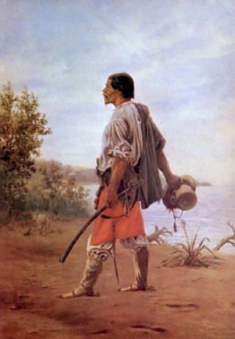

Lo que el rinde no mide
Venderle siempre al mismo es cómodo. También es caro. Nadie te factura lo que dejaste de ganar.
Por la redacciónHace veinte años cargaba camiones para otros. Hoy exporta a cuatro continentes. No cambió el producto. Cambió el camino.

“Yo no necesito que el mundo cambie. Necesito que el mundo sepa que existo.”— Productor de lentejas, La Pampa. La conversación completa, el jueves.
Sin relleno y sin newsletter de marketing. La gente, los mercados y el oficio del campo argentino.
Cancelás cuando quieras. No mandamos lo que nosotros no leeríamos.